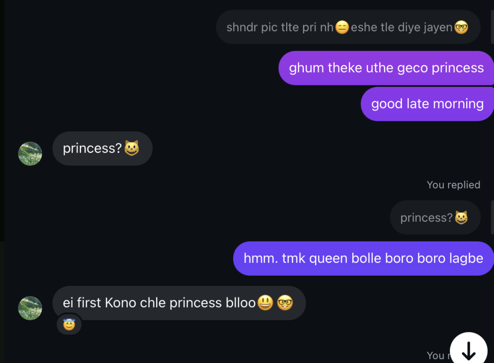
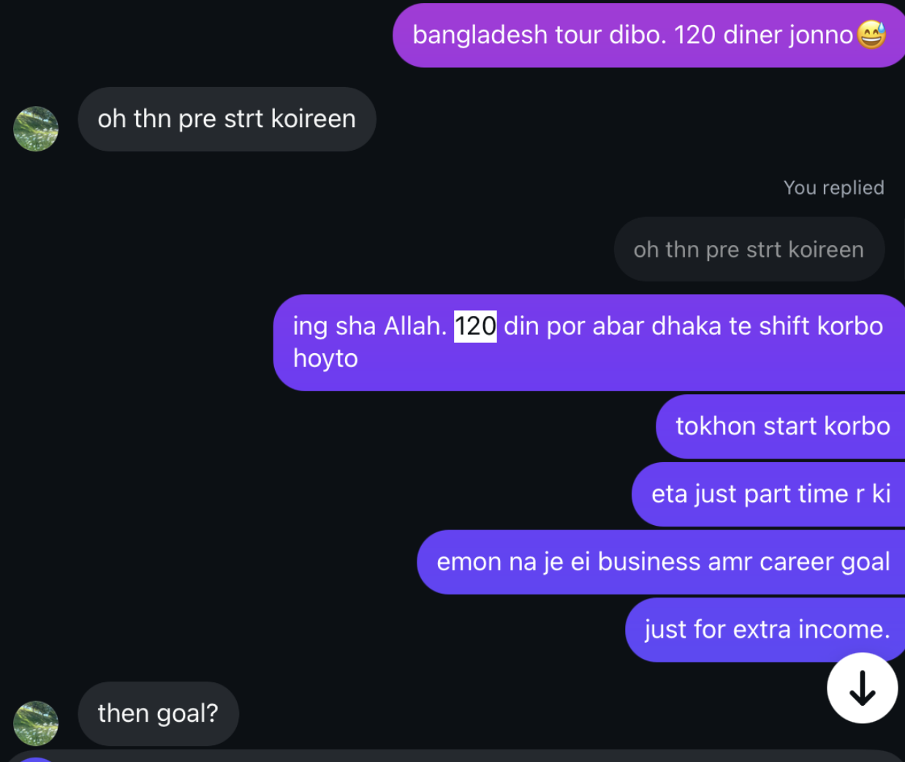
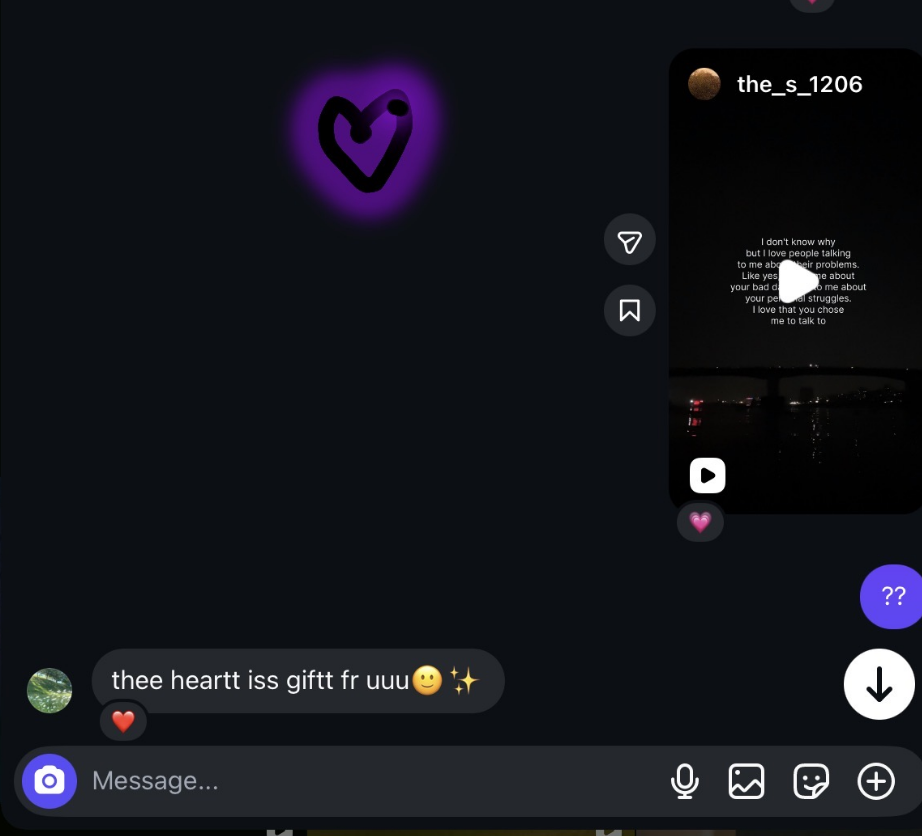
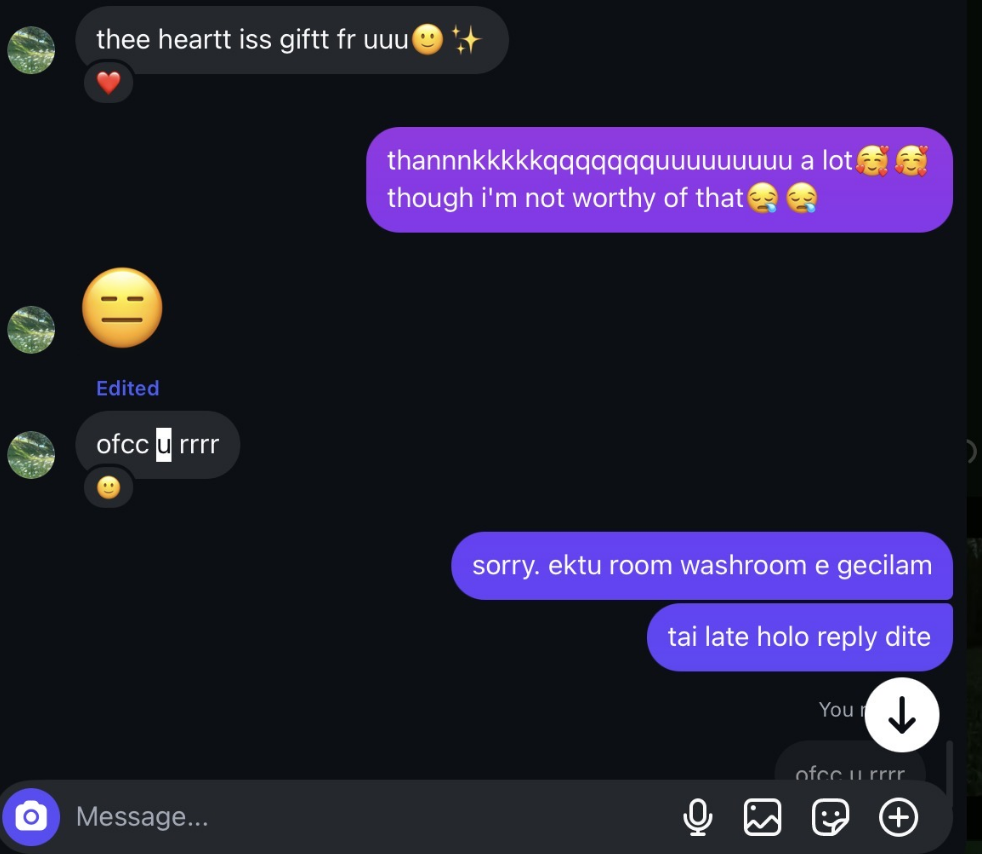
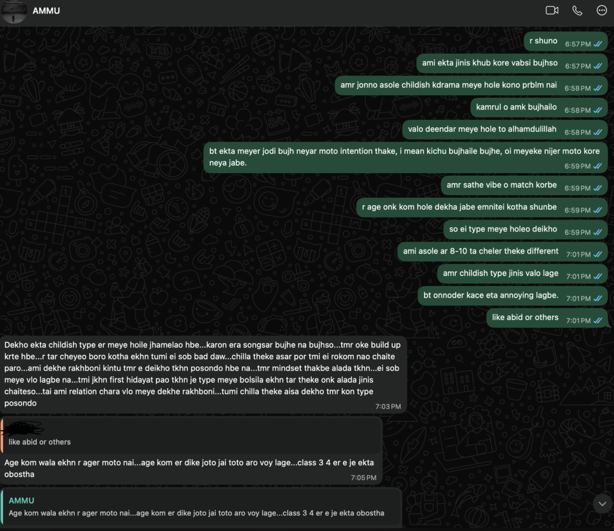
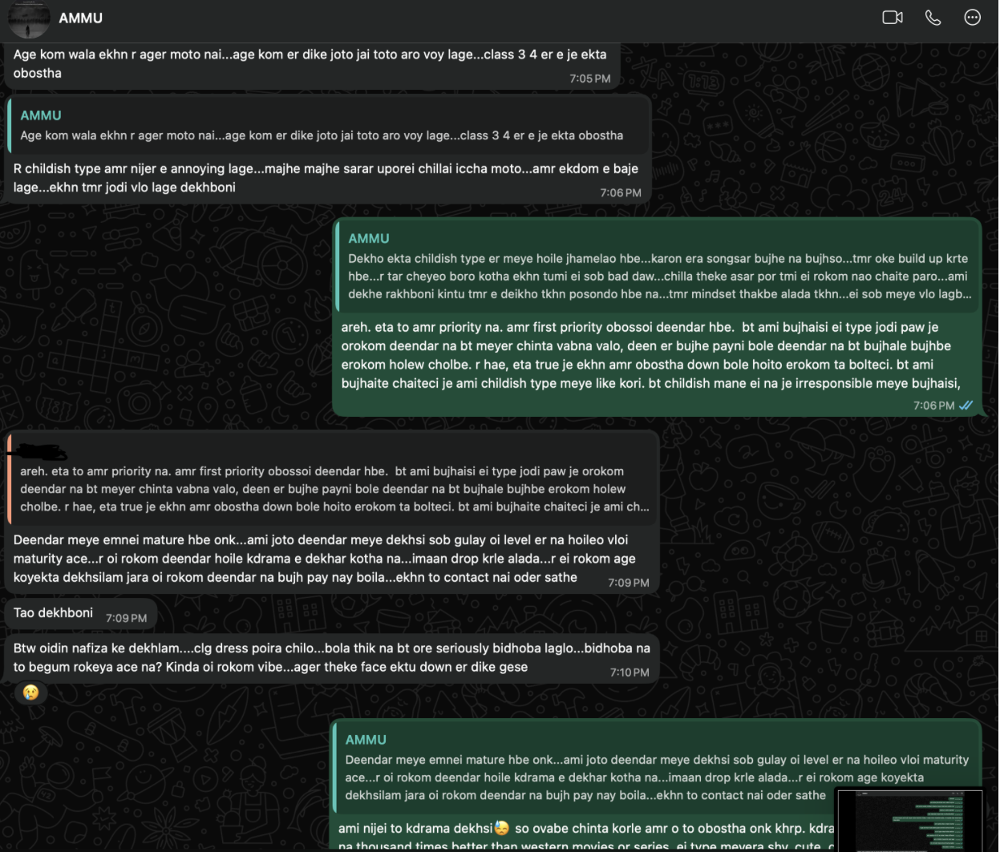
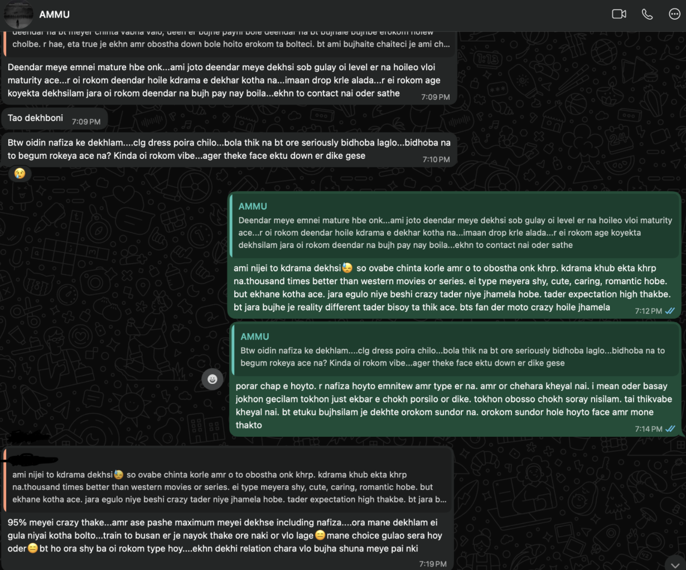
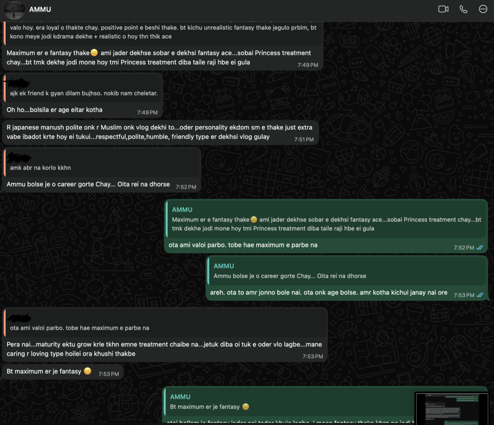
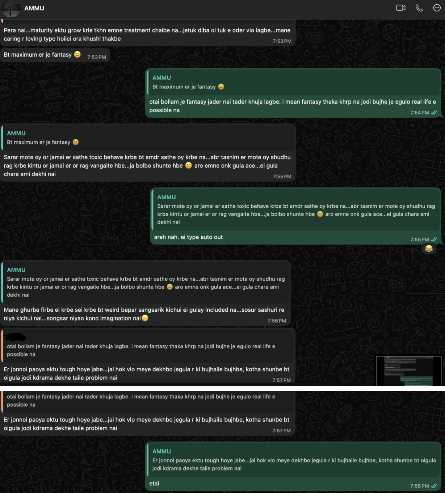

Our Coordinates 📍
Always finding our way back to each other...
System ready. Waiting for GPS signal...
Rafi's Tracker 🛰️
Ruhi's Tracker 🛰️
Open When... 💌
A little something for every mood
You miss me
You feel sad
You are mad at me
You can't sleep
Amader Golpo 📖
How it's going so far...
প্রথম দেখা
আমি সেদিন interpals e boring টাইম পাস করছিলাম😪। এমন সময় দেখি imsol নামের একটি মেয়ের আইডি🙂 তারপর বাকিটা ইতিহাস 🫠

প্রথম রাতের কথা
ঘড়ির কাঁটা পার হচ্ছিল, কিন্তু আমাদের কথা শেষ হচ্ছিল না। সেই রাতটা আমি কখনো ভুলব না।
সবচেয়ে সুন্দর মুহূর্ত
তোমার ওই হাসিটা দেখার জন্য আমি যেকোনো কিছু করতে পারি। This is just the beginning of our story...
Keno Tomake Etto Bhalo Lage ✨
(Reasons I like you)


Tap the button to find out...
Moments to Share With You ✨
Little glimpses of my day...
Uploading... Please wait ⏳
Our Garden 🌱
Watching our dreams grow...
Growing since Day 1
(Since the day we met online)
Graduation Day
I can't wait to celebrate together when I finally finish my RUET degree. Having you by my side will make it perfect.
"I'll be the loudest one cheering for you in the crowd. Promise. 🥺❤️"
The BCS Journey
Knowing you are cheering me on makes all the late-night study sessions and exam prep completely worth it.
"No matter how hard the journey gets, I am always your safe place to rest. ✨"
Our First Trip
Planting the seed for our first big adventure together. I want to see the world with you.
"I don't care where we go, as long as my hand is in yours. 🌍💕"
A Place of Our Own
Building a future where we never have to say goodbye at the end of the day.
"Home isn't a place for me anymore... it's wherever you are. 🏡💞"
Moner Kotha 📜
Love,
প্রিয় Ruhi 🌸,
আসসালামু আলাইকুম প্রিন্সেস। জানো প্রিন্সেস! তুমি যখন বলেছিল যে তোমাকে কোনো ছেলে প্রথম প্রিন্সেস বলেছে তখন আমার অনেক অনেক ভালো লেগেছিল। কিন্তু তুমি যেটা তুমি জানতে না এটা আমারও কাউকে প্রথমবার প্রিন্সেস বলা। এর আগে কখনও কাউকে বলিনি। তোমার প্রতি ভালো লাগা থেকে নিজেকে আর সংযত রাখতে পারিনি। 😌🥺💖
তুমি যখন এই লিখাটি পড়ছো তখন হয়তো আমি তোমার থেকে ডিসকানেক্টেড হয়ে গেছি। অজানা গন্তব্যের উদ্দেশ্যে হয়তো আমি বেরিয়ে গেছি অথবা যাওয়ার প্রসেসে আছি। হয়তো আর কখনই কথা হবে না আমাদের। অথবা বেঁচে থাকলে কোনো এক সুন্দর কারণে হয়তো কথা হতেও পারে, দেখাও হতে পারে। আমি কেনো তোমাকে কথাগুলো বলতেছি সেগুলো হয়তো আমি গুছিয়ে লিখতে পারতেছি না। মনের ভেতর অনেক অনেক কথা জমে আছে। যেগুলো হয়তো সব বলে শেষও হবে না।
আমার সম্পর্কে হয়তো এখনও অনেক অনেক কিছুই জানার বাকি আছে তোমার। আমি যদি একটা ১০০ পেইজের বই হয়ে থাকি তার হয়তো সর্বোচ্চ ৫ টা পেইজ পড়েছো তুমি। যার বেশিরভাগটাই হয়তো খারাপ ছিলো 😪আমার দুই ধরনের পারসোনালিটি আছে। যার খারাপ ভার্সনটার সাথে কথা বলেছো তুমি। যেমন ধরো তোমার সাথে কথা বলা, মিউজিক শোনা, অলস জীবনযাপন করা, নামাজ না পড়া, এভাবে বলতে থাকলে বলে শেষ হবে না। আমার ভালো পার্সোনালিটি টি স্ত্রী ব্যতীত অন্য কোনো মেয়ের সাথে কথা বলা পছন্দ করে না। তুমি হয়তো আমাকে ভণ্ড হিপোক্রিট ভাবতে পারো- যেটা আসলে মিথ্যা না। কারণ নিজের উপর কন্ট্রোল নেই আমার।খারাপ কাজে মাঝে মাঝেই স্লিপ করি। কিন্তু আমি যে একাই এরকম করি এমন না। আমরা সবাই কমবেশি অনেক খারাপ কাজ করি, যেগুলো আমরা জানি যে খারাপ কিন্তু তারপরেও করি। মানুষ প্রাণীটাই এমন। এজন্য আমি নিজের খারাপ দিক নিয়ে অনুতপ্ত হলেও আশাহত হই না। সবসময় চেষ্টা করি নিজেকে ফিরিয়ে নিয়ে আসার। তবে আমার নিজের উপর একদম ই কন্ট্রোল নেই এমন না। মেয়েদের থেকে আলহামদুলিল্লাহ যতটুকু দূরে থাকা সম্ভব চেষ্টা করেছি। এইদিকে অন্তত আমার আবেগের উপর যথেষ্ট কন্ট্রোল আছে এবং যথাসম্ভব সফলই হয়েছি বলে আমি মনে করি। কতটুকু ব্যর্থ হয়েছি সেই ইতিহাস তো তুমি জানই।
তোমার সাথে যখন প্রথম কথা হয় , শুরু থেকেই আমি একটা অন্যরকম ভালো লক্ষ্মী মিষ্টি একটা সফট মনের মেয়েকে অনুভব করি।☺️ সত্যি বলতে তুমি অলমোস্ট আমার ফান্ট্যাসি ওয়ার্ল্ড এর ড্রিম গার্ল। অলমোস্ট এজন্য বললাম কারণ তোমার মধ্যে সবচেয়ে গুরুত্বপূর্ণ গুণটি মিসিং। সেটা হচ্ছে যে দ্বীনদারীতা। আমার কাছে দ্বীনদারীতা বা ধার্মিকতার অবস্থান সবার উপরে। আমি আমার জীবনসঙ্গীর সাথে মাত্র ৩০-৪০ বছর একসাথে কাটাতে চাইনা। আমি চাই আমার প্রিয়তমার সাথে অসীম অনন্ত সময় একসাথে কাটাতে। সেজন্য আগে একসাথে জান্নাতে যাওয়াটা জরুরি। তুমি দ্বীনদার না হলেও তোমার যে দিকটি ভালো লাগার মতো সেটা হচ্ছে তুমি দ্বীনের প্রতি পজিটিভ। আর আমার বিশ্বাস তোমাকে ঠিকভাবে বুঝালে ধীরে ধীরে তোমাকে হয়তো দ্বীনের পথে আনা সম্ভব যদি তুমি রাজি থাকো । আর আমি সেজন্যই তোমাকে কখনও একবারে অনেকগুলো ইসলামিক ভিডিও পাঠাইনি। প্রতিদিন ১-২ টা করে অথবা মাঝে মাঝে একটু বেশি করে দিয়েছি। আর যেগুলো তোমার শুরুর দিকে ভালো লাগবে সেগুলো দেয়ার চেষ্টা করেছি। আসলে এভাবে ইনবক্সে কাউকে দ্বীনদার বানানোর চেষ্টা করা খুব ই কঠিন। আমার সাথে থাকলে হয়তো তোমাকে আরও বেশি হেল্প করতে পারতাম। এমন না আমি নিজেকে অনেক ধার্মিক মনে করে বলতেছি। আমি ধার্মিক না। কিন্তু আমার দ্বীনের বুঝ আছে আরকি। আর আমি খুব সহজে বাকিদের বুঝাতে অথবা মোটিভেট করতে পারি। এইতো, কিছুদিন আগে আমার এক স্টুডেন্ট আমাকে বলতেছিলো যে আমার জন্যই নাকি তার দ্বীনে ফেরা। আসলে আমি দ্বীনদার বানানোর কেউ না। দ্বীনদার বানানোর মালিক আল্লাহ। আমি শুধুমাত্র উসিলা হিসেবে কাজ করতে পারবো, একজন সাহায্যকারী আরকি। আমার নিজেকে অনেক সংশোধনের প্রয়োজন। অনেক অনেক খারাপ অভ্যাস ভালো অভ্যাস দিয়ে রিপ্লেস করা লাগবে। এজন্যই আমি ৩ চিল্লায় (১২০ দিন মসজিদে থাকা) যাচ্ছি ইনশাআল্লাহ। আমি এটা হুট করে ডিসিশন নেইনি। আমি তোমার সাথে কথা বলা শুরু করার আগে থেকেই এটা ফিক্সড ছিলো। আমি অবশ্য তোমাকে মাঝখানে ইন্ডরেক্টলি বলেছিলাম ও। এইযে:

আমার তোমার সাথে কথা বলে অনেক ভালোলাগা কাজ করছিলো। আমি অবশ্য জানতাম যে এই কথা বলা ক্ষণস্থায়ী। তবে আমি এতোদিন বুঝার চেষ্টা করছিলাম এটাকে কোনোভাবে বিয়ের মাধ্যমে দীর্ঘস্থায়ী করা পসিবল কি না। আর আমার এতোদিন এর অবজার্ভেশনে যা মনে হয়েছে তোমার দ্বীনদার হওয়া লাগবে না, তুমি যদি শুধুমাত্র নিজেকে দ্বীনদার বানাতে প্রস্তুত থাকো তাহলে সেটাই আমার জন্য ইনাফ। ইনশাআল্লাহ বাকিটা আল্লাহ দেখে নিবে আর আমিও সাহায্য করবো। তুমি বাকি প্রায় সব দিক থেকেই আমার জন্য পার্ফেক্ট।যদিও আমি তোমাকে দেখিনি কিন্তু আমার কাছে সৌন্দোর্যটা এতো বেশি ম্যাটার করছে না। তোমার চেহারা যদি আমার কাছে মোটামুটিও লাগে তবুও তুমি আমার প্রিন্সেস।😊সৌন্দোর্য ক্ষণস্থায়ী। আমি আজ যদি বিশ্বের সবচেয়ে সুন্দরী মেয়েকেও বিয়ে করি তবুও আমার দুইদিন পর অন্য কোনো মেয়েকে দেখতে তার চেয়ে সুন্দর মনে হবে, তাই বলে কি ঐ সুন্দরী মেয়েকে ছেড়ে দিবো? আর বাহ্যিক সুন্দরের মজা বেশিদিন থাকে না। আজ পর্যন্ত বস্তুগত যত সুন্দর জিনিস ই পেয়েছি অনেকদিন ব্যবহারের পর সেটা আর আগের মতো সুন্দর লাগে নি। তবে যদি আমি বস্তুগত সৌন্দর্য থেকে বের হয়ে আবেগের বন্ধনের সৌন্দর্যের কথা বলি তবে তা আমি দিন যত পেরিয়েছে তত বেশি সুন্দর পেয়েছি। যেমন ধরো, আমি আমার মায়ের সাথে দিন যত গিয়েছে তত বেশি আমার মা কে সুন্দর মনে হয়েছে(অন্তর) , ততো বেশি গভীর বন্ধন মনে হয়েছে। তারপর ধরো যেসব বন্ধুদের সাথে যত বেশি সময় কাটিয়েছি তাদের সাথে বন্ধন তত বেশি গভীর হয়েছে। কিন্তু তারা তো সবাই দেখতে ভালো এমন না। যেমন ধরো আমার সবচেয়ে কাছের বন্ধু, যে আমার বেস্টফ্রেন্ড সে দেখতে তেমন ভালো না কিন্তু তারপরেও তার সাথে ১৭ বছরের বন্ধুত্ব, দিন যত গেছে আমাদের বন্ধুত্ব ততই গভীর হয়েছে।আমি জানি এটা হাস্যকর মনে হচ্ছে যে একটা ছেলে বন্ধুর সৌন্দর্য নিয়ে আমি কেনো কথা বলছি। কিন্তু আমি আসলে এর ভেতরের মূল মর্মার্থটা বুঝাতে চাচ্ছি। সেটা হলো কারও সাথে বন্ধন গভীর হতে সৌন্দর্য ম্যাটার করে না তেমন। সেটা তোমার বাবা, মা, ভাই, বোন, আঙ্কেল বা ফ্রেন্ড দের দেখলেই বুঝবে। তাহলে আমার স্ত্রীর বেলায় কেনো তা ব্যতিক্রম হবে। হ্যাঁ স্ত্রীর সাথে শারীরিক সম্পর্কের একটা বিষয় জড়িত আছে, কিন্তু সেটার জন্য একটা মিনিমাম লেভেল এর সুন্দর হওয়াই আমার জন্য ইনাফ। আহামরি সুন্দরের দরকার নেই। কারণ বাহ্যিক সৌন্দর্য ক্ষণস্থায়ী। তাই তুমি যেমন দেখতেই হও না কেনো আমার কাছে সেটার ভ্যালু খুব ই কম। যদিও ছেলে মানুষ সৌন্দর্যের পূজারী, তাই আমার কাছে মোটামুটি দেখতে হলেই চলবে। বেশি সুন্দরের দরকার নাই।
আমি অবশ্য সর্বোচ্চ চেষ্টা করেছি তোমার প্রতি আমার ফিলিংস টা বুঝতে না দেয়ার। হয়তো পারিনি কারণ মিথ্যা তো আর বলতে পারিনা। তোমাকে যদি আমার ফ্রেন্ড বলতাম তাহলে সেটা মিথ্যা কথা হয়ে যেতো।হয়তো শুরুতে পরিচয় লুকাতে একদম শুরুতে তোমাকে দু-একটা মিথ্যা বলেছি সেটার জন্য আমি একদম সরি, কিন্তু বাকি সময় পুরোটাই তোমার প্রতি আমি একদম রিয়েল ছিলাম। আর আমার মনে হয়না তুমিও আমাকে বন্ধু মনে করতে। কারণ বন্ধুদের নিজেদের ভেতর ছোটোখাটো বিষয়ে লজ্জা কাজ করে না। যেমন ধরো তুমি আমাকে ভয়েস অথবা কল দিতে ইতস্তত বোধ করতে, গানের ভিডিও পাঠালে একদম সুন্দর করে পাঠানোর ট্রাই করতে। এগুলো বন্ধুদের মাঝে হয়না নরমালি। যাইহোক, তুমি আমাকে শুধু বন্ধু মনে করলেও করতে পারো। তবে আমি আমার পাশ থেকে আমি ফ্লার্ট না করার সর্বোচ্চ ট্রাই করেছি। আমি আসলে ফ্লার্ট করলে প্রচুর প্রচুর ফ্লার্ট করতে পারতাম। কিন্তু সেগুলো আমার স্ত্রীর অধিকার পাওয়ার পরই দেখতে পাবে। তবে আমি মাঝে মাঝে হয়তো ইন্ডিরেক্টলি কিছু ফ্লার্ট করে ফেলেছি না চাইতেও। আসলে তুমি মেয়েটাই এমন। আমার যে কত কষ্ট হয়েছে তুমি জানো না। একটা উদাহরণ দেইঃ


তুমি জানো না তুমি যেদিন আমাকে লাভ আঁকিয়ে পাঠিয়েছিলে আমি সেদিন যে কি পরিমাণ খুশিতে উত্তেজিত হয়েছিলাম তোমাকে বলে বুঝাতে পারিনি। কিন্তু আমি তোমাকে তেমন কিছুই বুঝতে দেইনি। আমি চাইলে তোমাকে এত্তো এত্তোগুলো লাভ আর ফ্লার্টিং টাইপ কথা পাঠাতে পারতাম। মনে হচ্ছিলো তুমি যদি আমার কাছে থাকতে তোমাকে গিয়ে একদম জড়িয়ে ধরতাম ঐ সময়। কিন্তু আমি নিজেকে খুব কষ্ট করে সংযত রেখেছিলাম। এরকম অনেক মুহূর্ত এসেছিলো যখন তোমাকে ফ্লার্ট করার মতো অনেক পাঞ্চলাইন মাথায় এসেছিলো। কিন্তু বলতে গিয়েও বলতে পারিনি। তোমাকে নিয়ে এমন সব কিউট কিউট কল্পনা মাথায় আসতো যেগুলো তোমাকে বলতেও পারতাম না।
আমার কাছে বিয়ে ব্যতীত অন্য কোনো হারাম রিলেশনের কোনো ভ্যালু নেই। কারণ বাকিসব ই আমার কাছে টাইম পাস মনে হয়। কারণ বিয়েই একমাত্র commitment. বাকি কোনো commitment এর কোনো ভ্যালু নাই।আমার কাছে কাউকে ভালোবাসা মানে সারাজীবনের জন্য ভালোবাসা। I’m made only for my wife. যখন কাউকে ভালবাসবো জান প্রাণ দিয়ে সারাজীবন ভালবাসবো। যদি রিলেশন করার ই থাকতো এতদিনে হয়তো অনেকগুলোই করতে পারতাম যদি চেষ্টা করতাম। নিজের আবেগগুলো মেটাতে চাইতাম। রিলেশন জিনিসটা নিজের উপর এক অভিশাপ। শুধু নিজের উপর না। আমি যাকে বিয়ে করবো তার উপরও অভিশাপ হবে। কেনো অভিশাপ সেটা পরে কোনোদিন হয়তো বুঝানোর মতো সিচুয়েশন আসলে বুঝাব। আমি আমার লাইফে খুব কম রিলেশনই বিয়ে পর্যন্ত যেতে দেখেছি। ৭-৮ বছরের সম্পর্কে এক নিমিষেই ভেঙ্গে যেতে দেখেছি। আসলে হারাম সম্পর্কগুলো এমনই। এগুলো লাস্টিং করে না। যদি করতই তাহলে আল্লাহ হয়তো এটাকে জায়েজ করতো। হয়তো মনে হতে পারে তুমি অনেক লয়াল থাকবে, কিছুতেই ব্রেকাপ হতে দিবে না, বিয়ে পর্যন্ত নিয়েই যাবে। কিন্তু এভাবে হয়না। ছেলেদের রিলেশনের বেলায় রুচি চেঞ্জ হয়। কারণ একটা ছেলে যখন একটা মেয়েকে রিলেশন এর জন্য এপ্রোচ করে তখন মেয়ের ভেতর নিজের স্ত্রী খুঁজে না, গার্লফ্রেন্ড খুঁজে। আর দুটোর মাঝে বিস্তর তফাত আছে। গার্লফ্রেন্ড হচ্ছে যার সাথে শুধু আবেগ মেটানো যাবে, মোস্ট অফ দা টাইম এখানে মেইনলি শারীরিক সৌন্দর্যই দেখে ছেলেরা । আর স্ত্রী হচ্ছে যার সাথে সুখ-দুঃখ সবসময় সাথে থাকা লাগবে, যার অসুস্থতার সময় পাশে থাকা লাগবে, যদি দরকার হয় অসুস্থ স্ত্রীর বমি বা মল এগুলোও পরিষ্কার করা লাগবে, যে সবসময় ভালো পোশাকে বা মেকআপে থাকবে না কিন্তু তখনও তাকে সুন্দর লাগবে, যার সকল চাওয়া পাওয়ার দায়িত্ব নেয়া লাগবে, যে তার বাচ্চাদের জন্য আদর্শ মা হবে, যাকে আমার মা-বাবা নিজের মেয়ের মতো বরণ করে নিবে। আসলে একটা বিষয় কি জানো? একটা মেয়ে যখন বাবার বাড়িতে থাকে তখন সে princess এর মতোন থাকে, যেখানে তার ভুলগুলো সবাই ইগনোর করে, যাকে তার বাবা-মা সব ধরনের কষ্টের কাজ থেকে দূরে রাখার চেষ্টা করে, যাকে কেউ জাজ করে না, যেখানে সে মনমতো যা ইচ্ছা তা করতে পারে কে কি ভাবল এটা নিয়ে মাথা ঘামানো লাগে না, যাকে সব বেস্ট অপশনগুলো দেয়া হয় (যেমন মুরগি রান্না হলে মুরগির রান, কাপড় কিনলে সবচেয়ে সুন্দর কাপড় ইত্যাদি, ইভেন রান্নাও করা হয় তার পছন্দ মতো। ), যে থাকে ঐ সংসারের টপ priority ইত্যাদি। কিন্তু সেই princess যখন কোনো ছেলের বাড়িতে বউ হিসেবে যায় তখন বাংলাদেশের প্রেক্ষাপটে সে আর সেই princess treatment পায়না। একটা মেয়ে যখন তার বাবার বাড়ির প্রিন্সেস ট্রিটমেন্ট ফেলে রেখে একজন ছেলের কাছে চলে যায় তখন ঐ ছেলেই তার সব। ঐ ছেলেই তার বাবা -মা সব। তাই ঐ ছেলের মেয়ের সাইড থেকে এগুলো বুঝা উচিত। মেয়েকে ওভাবে treat করা উচিত। ছেলের বুঝা উচিত এখন থেকে এই মেয়েকে প্রিন্সেস এর মতো রাখা আমার দায়িত্ব। মেয়ের কখন কি ভালো লাগা, খারাপ লাগা, সব আমার ই হ্যান্ডেল করা লাগবে। যদি কোনো বিপদ আসে সেটা যেনো আমার প্রিন্সেস এর কাছে যাওয়ার আগে আমার বুক চিড়ে যায়। আমার প্রিন্সেস আমার কাছে আল্লাহর থেকে প্রদত্ত আমানত। তার মনে যেনো ফুলের টোকাটাও না লাগে সেটা make sure করা আমার দায়িত্ব। যদিও পুরোটা সম্ভব না কিন্তু যতদূর সম্ভব চেষ্টা চালিয়ে যাওয়া। কিন্তু ছেলেরা গার্লফ্রেন্ড বানানোর সময় এগুলো ভাবেই না। ভাবলেও এগুলো ম্যাটার করে না কারণ তার তো নিজের চাহিদা মেটানো দরকার, আবেগ মেটানো দরকার। দেখতে সুন্দর মনে হলেই মেয়ের প্রতি রাজি হয়ে যায়। তাহলে সেটা বিয়ে পর্যন্ত যাবে কি করে। কারণ যে মেয়েকে সে সৌন্দর্য দেখে গার্লফ্রেন্ড বানিয়েছে দিনশেষে সে ঠিকই জানে যে এই মেয়ের সাথে সারাজীবন কাটানো যাবে না। কিন্তু দিনশেষে আবেগ মেটানোর জন্য গার্লফ্রেন্ড বানিয়ে রাখে। আমি নরমালি ভালো ছেলেদের close frnd বানাই। কিন্তু যারা খারাপ তাদের সাথেও ভালো সম্পর্ক রাখি, তাদের সাথেও মাঝে মাঝে কথা বলি। দুনিয়াটা কেমন এটা বুঝতে গেলে খারাপ দের সাথে কথা বলে বুঝা লাগে। তাহলে বুঝা যায় দুনিয়াতে কতকিছু চলতেছে অথচ আমি এসবের কিছুই জানি না। ছেলেদের মুখের কথা কখনও বিশ্বাস করো না। ছেলেরা তোমাকে পটানোর জন্য একেক সময় একেক রূপ ধারণ করতে পারবে। তুমি কিছুতেই বুঝবে না যতদিন না তুমি কারও ধোঁকা খাচ্ছো । কিন্তু যদি কখনও কারও সাথে সম্পর্ক করো তাহলে একটা সময় পর যখন দেখবে- যে ছেলেকে একসময় জান প্রাণ দিয়ে ভালবেসেছিলে অথচ তার সাথে তোমার বিয়ে হচ্ছে না। তখন হয়তো ঠিকই আমার কথা মনে করবে। যদিও তুমি আমাকে বলেছো যে তুমি তোমার হাসবেন্ড এর জন্য লয়াল থাকতে চাও, বিয়ের আগে কখনও রিলেশন করবে না। কিন্তু তারপরেও আমার কেনো যেনো মনে হয় তোমাকে কোনো ভালো লেভেল এর প্লেবয় এপ্রোচ করলে তুমি ফাঁদে পা দিয়ে দিলেও দিতে পারো। sorry if i hurted u by saying this. তুমি হয়তো ভাবতে পারো যে তোমার উপর বিশ্বাস নেই আমার। আসলে বিশ্বাস আছে তোমার উপর কিন্তু তোমার নাজুক মনের উপরও আমার বিশ্বাস আছে। তুমি এতোটাই সফট যে তোমাকে হয়তো ভালো কোনো প্লেবয় মিষ্টি কথার মাধ্যমে ধীরে ধীরে প্রেমের ফাঁদের ফেলতে পারে। যাইহোক, প্রচুর অফ টপিকে চলে যাচ্ছি।
তুমি জানো না তুমি যেদিন আমাকে লাভ আঁকিয়ে পাঠিয়েছিলে আমি সেদিন যে কি পরিমাণ খুশিতে উত্তেজিত হয়েছিলাম।
আমার কাছে বিয়ে ব্যতীত অন্য কোনো হারাম রিলেশনের কোনো ভ্যালু নেই। কারণ বাকিসব ই আমার কাছে অর্থহীন।
এখন প্রশ্ন হচ্ছে আমি কি চাচ্ছি আসলে? আমি আসলে ২ টা জিনিস চাচ্ছি—
১। যদি সম্ভব হয় তোমাকে বিয়ে করতে যদি তুমি আল্লাহর কাছে আত্মসমর্পণ করতে রাজি থাকো। (আমার ধারণা আমার তোমাকে...)
২। যেহেতু তোমাকে বিয়ে করা পসিবল না, আমি চাই তুমি যখন যেখানে যে অবস্থায় থাকো অনেক অনেক অনেক হ্যাপি থাকো।
কেনো তোমাকে বিয়ে করা পসিবল মনে হয়নি আমার কাছে?
= আমার পক্ষ থেকে বিয়ে করতে তেমন একটা প্রবলেম হবে বলে মনে হয়না। কিন্তু আমার মনে হয়না তুমি আমাকে বিয়ে করতে রাজি...
এখন আসি আমাকে কেন তোমার বিয়ে করা উচিত?
= সত্য বলতে হয়তো তুমি আমার চেয়ে অনেক ভালো ছেলে পেতেই পারো। লাইফ খুবই আনপ্রেডিক্টেবল। আল্লাহ যদি আমাকে তোমার...
১২ আগস্ট, ২০২৬ঃ
এখনো পর্যন্ত যেটুকু পড়েছো সেগুলো আগেই লেখা। কিন্তু আজ তোমাকে ফাইনালি প্রপোজাল দিয়ে ফেলেছি। আমার আসলে তোমাকে ইনবক্সে প্রপোজাল দেয়ার ইচ্ছা ছিল না। এখন থেকে যা পড়বে সেগুলো তোমাকে প্রপোজাল দেয়ার পরে লেখা।
আমার কেমন মেয়ে পছন্দ?
= এটার উত্তর আমার বায়োডাটাতে পেয়ে যাবে। আমি তোমাকে আমার বায়োডাটা দিয়ে দিবোনি।
আমি কি তোমাকে এখনই বিয়ে করতে বলতেছি?
= না! একদমই না। এখন হুট করে তো পসিবল না। আর আমি এমনিতেও ১২০ দিনের জন্য চিল্লায় যাচ্ছি (মিনিমাম ৮০ দিন ইনশাআল্লাহ)। এর মধ্যে তো এমনিতেও পসিবল না। তুমি আমাকে পজিটিভ কিছু জানালেও আরও অনেক ব্যাপার থেকে যাবে যেগুলো সামনাসামনি দেখা হওয়ার পর ডিসিশন নেয়া লাগবে। অর্থাৎ তুমি আমাকে ধরো হ্যাঁ বলা মানেই যে আমাকেই বিয়ে করতে হবে এমন না। তোমার আমাকে সামনাসামনি দেখা লাগবে, কথা বলা লাগবে, আমার এবং আমার পরিবার সম্পর্কে বিস্তারিত খোঁজখবর নেয়া লাগবে। তারপর না তুমি পরিপূর্ণভাবে বিয়েতে মত দিতে হবে। তাই আমি চাইনা তুমি আমাকে এখনই হ্যাঁ-না কিছু জানাও। আমি চাই তুমি আমাকে শুধু এটুকু জানাও যে তুমি বিষয়টি সামনে এগিয়ে নিতে চাও কিনা। তুমি দরকার হয় সময় নাও। ৮০ দিন বা ১২০ দিন বা যতদিন তোমার মন চায়। কিন্তু সম্ভব হলে বেশি দেরি না করাই ভালো। তুমি যদি তোমার ফ্যামিলিকে নিয়ে ভয় পাও যে তারা কি রিয়াক্ট করবে তাহলে সেটাও আমাকে খুলে বলতে পারো। আমি তোমাকে হেল্প করার চেষ্টা করবো।
আমি কি আসলেই সাময়িক আবেগের বশে বিয়ে করতে চাচ্ছি নাকি আমি সত্যি সিরিয়াস তোমার প্রতি?
= অবশ্যই আবেগের কারণেই হয়তো আমি শুরুতে তোমার প্রতি আকর্ষণ ফিল করেছি। কিন্তু পরে বিষয়টি আমি বিবেক দিয়ে ভাবার চেষ্টা করেছি। যদি কিছু বিষয় সংশোধন করতে পারি তাহলে আমার বিবেক বিষয়টিকে সিরিয়াসলি নিতে একদম রাজি। তার একটি নমুনা তোমাকে দেখাইঃ





তোমার মনে আছে তোমাকে আমি এর আগে স্বপ্নে দেখেছিলাম? কিন্তু তখন তোমাকে বলিনি যে স্বপ্নে কী দেখেছিলাম। তখন এজন্য বলিনি কারণ আমি প্ল্যান করেছিলাম তোমাকে এভাবে সবকিছু গুছিয়ে লিখে একবারে বলবো।
এখন আসি এর আগে ২ দিন তোমাকে যে স্বপ্নে দেখেছিলাম, স্বপ্ন দুটি কী ছিলঃ
প্রথমদিনেরটা তোমাকে বিয়ে করা নিয়েই ছিলো। কিন্তু exact মনে নেই স্বপ্নটা। দ্বিতীয়দিনেরটা মনে আছে। স্বপ্নের শুরুটা হয় তোমার হাত ধরে। আমি মাঝরাস্তায় তোমার হাত ধরে দাঁড়িয়ে আছি। একদম অচেনা-অজানা জায়গা। তুমি কালো বোরকা আর হিজাব পড়ে আমার হাত ধরে দাঁড়িয়ে আছো। তুমি ভয়ের মধ্যে আছো, আমিও এক গভীর চিন্তার ভেতর আছি—কোথায় যাবো, কীভাবে যাবো বুঝতেছিনা। বুঝতে পারলাম তুমি তোমার বাসা থেকে পালিয়ে এসেছো আমাকে বিয়ে করার জন্য। আমি আরও তোমাকে নিয়ে টেনশনে আছি যে বাচ্চা মেয়েটা করেছেটা কী! যাই হোক, আমি তোমার বাবা-মাকে আমার নানুবাড়ি ডেকেছি, কারণ তোমার বাবা-মায়ের অনুমতি ছাড়া বিয়ে করা পসিবল না আমার পক্ষে।
তখন ভোরবেলা। আশেপাশে মৃদু কুয়াশা, কুয়াশা ভেদ করে এক-দুটো রিকশা যেতে দেখা যাচ্ছে। জায়গাটা ভালো না, বাজে মানুষেরা এখানে যাতায়াত করে। আমি দ্রুত সেখান থেকে প্রস্থান নিয়ে নানুবাড়ি যেতে চাচ্ছিলাম। এমন সময় দু-তিনটা রিকশা দেখলাম কিন্তু কেউই যেতে চাচ্ছিলো না। আর এদিকে আমি এই সুন্দর কিউট মেয়েকে নিয়ে ভয়ে আছি যে এই বাজে জায়গায় যদি কোনো বখাটেরা এসে ঝামেলা করে! এমন সময় একটা ফাঁকা রিকশা দেখলাম। রিকশাওয়ালার চেহারা পুরাতন বাংলা সিনেমার ভিলেনের মতোন—দেখেই মাস্তান মাস্তান লাগে। বড় গোঁফ, একদম কয়লার মতো কালো, বড় বড় উসকো-খুসকো চুল। কিন্তু আশেপাশে রিকশা না পাওয়ায় তাকেই জিজ্ঞাসা করলাম যাবে কিনা। বললো যাবে। তোমার দিকে একটু অন্যভাবে তাকিয়ে ছিলো। তখন তোমার হাতটা আমি শক্ত করে ধরে বুঝিয়ে দিলাম এদিকে তাকানো যাবে না।
রিকশায় উঠে পড়লাম। রাস্তায় চলার সময় বেশ কয়েকবার রিকশাওয়ালা তোমার দিকে ঘুরে তাকাচ্ছিলো। আমার কাছে বিষয়টা সুবিধার লাগতেছিলো না। গ্রামের রাস্তায় চলে এসেছি, দুই পাশে ঢালু জমি আর জঙ্গল। এমন সময় রিকশাওয়ালা রিকশা থামিয়ে বললো তার ওয়াশরুমে যাওয়া লাগবে। ওয়াশরুমের কথা বলে রিকশাওয়ালা কই যেন চলে গেলো। তখন আমি তোমার হাত ধরে বললাম, "আমাদের যত দ্রুত সম্ভব এখান থেকে যাওয়া লাগবে।" এটা বলে কিছুটা তাড়াহুড়ো করে আমরা ঐ জায়গা থেকে কিছুটা সামনে এগিয়ে এলাম। সেখানে সৌভাগ্যবশত একটা রিকশা পেয়ে গেলাম, রিকশাওয়ালা মামাকে ভালোই মনে হইলো। সেই রিকশায় নানুবাড়ি চলে এলাম।
কিন্তু এটা একটা কাল্পনিক জায়গা আর কাল্পনিক নানুবাড়ি ছিলো। বাস্তবে আমার নানুবাড়ি পুরো অন্যরকম দেখতে। তো নানুবাড়ি গিয়ে দেখলাম বাড়ি মানুষ দিয়ে ভর্তি। তোমার বাবা-মাও সম্ভবত এসেছিলো। তোমাকে আমার বোন আর নানু সম্ভবত আমার কাছ থেকে নিজেদের কাছে নিয়ে গেলো। আমি তোমাকে বললাম, "যাও তুমি। কোনো সমস্যা নাই। আমি সব ম্যানেজ করতেছি। আমি থাকতে তোমাকে কোনো চিন্তায় পড়তে দিবো না ইনশাআল্লাহ।" তারপর আমি ভেতরে গেলাম, আর তারপরই ঘুম ভেঙে যায়। স্বপ্নগুলো এমন কেন? সবসময় ক্লাইম্যাক্সে এসে ঘুম ভেঙে যায়!
তবে হ্যাঁ, আমি স্বপ্নে তোমার ফেস দেখেছি। আমি নরমালি অন্য কোনোবার তোমার ফেস দেখতে পারিনি, কিন্তু ওইবার দেখেছি। এখন হয়তো ওটার সাথে তোমার বাস্তব জীবনের ফেসের একদমই মিল নাও থাকতে পারে। কিন্তু অবাক করার বিষয় হলো, ফেসটা একদম আমি কক্সবাজারে যে মেয়েকে দেখেছিলাম প্রায় ঐ মেয়ের মতোই ছিলো, আর ড্রেসআপও একদম ওরকমই। আবার তুমি এটা ভেবো না যে স্বপ্নে আমি কীভাবে বুঝলাম ওটা তুমি—কারণ আমি তোমার নাম "রুহি" বলে ডেকেছিলাম, আর স্বপ্নে আমাদের মাঝে হওয়া কথাগুলো স্পষ্ট মনে ছিলো। আর তোমার বাবা-মা ঢাকা থেকে এসেছিলেন।
এখন অন্য ঘটনায় আসিঃ
তোমার মনে আছে রাজশাহী থেকে আসার সময় পুরো রাস্তা আমি তোমার কথা চিন্তা করতে করতে এসেছি? তুমি আমাকে বলেছিলে আমি কী চিন্তা করতে করতে এসেছি, আমি তোমাকে বলেছিলাম পরে বলবো। তো সেটা এখন বলার কথাই বুঝিয়েছিলাম।
রাজশাহী থেকে আসার সময় ২ ধরনের চিন্তা করতেছিলাম—
১। আমি তোমাকে আমার imaginary world-এ স্থান দিয়েছিলাম।
২। আমি বাস্তবিকভাবে তোমাকে পেতে পারি কিনা, পেলেও সেটা কীভাবে।
১ নম্বরটা নিয়ে আগে বলিঃ
আমার একটা কল্পনার জগত আছে, যেটা আমি ২০১৮ সাল থেকে কল্পনা করে আসতেছি। সেই জগতে আমিই মেইন ক্যারেক্টার। সেই জগতে আমার এই বাস্তবের দুনিয়াই আছে—বাবা-মা, বন্ধু-বান্ধব, বাস্তবের বাসা সবই আছে। কিন্তু এই বাস্তব দুনিয়ার বাইরেও একটা জগত আছে সেখানে। সেখানে আমার একধরনের সুপারপাওয়ার টাইপ কিছু শক্তি আছে। সেটা পাই যখন আমি প্রাইমারি স্কুলে পড়ি তখন। আমি তখন আল্লাহর সাহায্যে বস্তুর তৃতীয় ডাইমেনশনের বাইরে গিয়েও আরও দুটো ডাইমেনশনের সন্ধান পাই। একটা হচ্ছে সময়, আর অন্যটি একটু অদ্ভুত ধরনের। সেটিতে আমি এই পৃথিবীর ভেতরই এমন একটা ডাইমেনশনে থাকি যেটাকে কেউ দেখতে পারে না—এমন এক কোয়ান্টাম জগত যেখান থেকে পুরো পৃথিবীর সকল প্রান্তের সকল মানুষকে একজায়গায় বসে অবজার্ভ করা সম্ভব। শুধু তাই নয়, আমি চাইলে সেখানে পরিবর্তন আনতে পারি কিন্তু পৃথিবীর কেউ দেখতে পারবে না যে কে করতেছে।
শুধু যে কেউ দেখতেই পারে না এমন না, আমার আরও বেশ কিছু পাওয়ার আছে। যেমন আমি ওই ডাইমেনশনে গিয়ে সময়কে ব্যবহার করে যুগের পর যুগ কাটাতে থাকি যখন আমি ছোট। সেখানে আমি অনেকদিনের গবেষণা করে নিজের মতো দেখতে হুবহু একজন মানুষরূপী এআই রোবট বানাই। রোবটটি দেখতে হুবহু আমার মতো এবং রোবটটিতে আমার মাথার মেমোরি রিপ্লেস করে দেই। এজন্য রোবটটি পুরোপুরি আমার মতো চিন্তা করতে পারে, রোবটটির মধ্যে আবেগও দিয়ে দেই। অর্থাৎ বলতে গেলে রোবটটি আমার একদম নিখুঁত কপি। কিন্তু রোবটটির অনেক অনেক ক্ষমতা আছে, রোবটটিকে কেউ সহজে কিছুই করতে পারবে না। আমি আর আমার রোবট ভার্সন মিলে পুরো দুনিয়াকে ঠিক করতে নেমে পড়ি।
শুরুটা হয় বাংলাদেশকে দিয়ে। আমার কাছে মানুষের সংখ্যা doesn't matter; ১০ জন হোক অথবা ১০ লাখ, আমি একসাথে সবাইকে তুলে আনতে পারি এক নিমিষেই—তুলে নিয়ে আসি সেই ডাইমেনশনে, যে কারণে কেউ কোনোভাবেই খুঁজে পায় না। আমার রোবট ভার্সন সারাবিশ্বের সব ডাটা সার্ভারের সাথে যুক্ত, যার আছে ডাটা ম্যানিপুলেট করার ক্ষমতা, সেই সাথে সব ইনফো এভেইলেবল। এক চুটকিতে বিশ্বের সকল গোপন নথি আমার কাছে চলে আসে—সেটা হোক নিউক্লিয়ার মিসাইলের লঞ্চ কোড কিংবা ট্রাম্পের স্ক্যান্ডাল।
তো আমি শুরুতে বাংলাদেশকে ভালো করার মিশন নেই। যেহেতু টেকনোলজি আমার হাতে, তাই আমি হঠাৎ একদিন লাইভে আসি। এটা কোনো ফেসবুক লাইভ না, এটা এমন এক লাইভ যেখানে সারাবিশ্বের সকল ফোন, টিভি, আইপ্যাড—সহজ কথায় সকল ধরনের ডিভাইসে আমার লাইভটা শুরু হয়ে যায়, কেউ চাইলেও অফ করতে পারবে না। আমি লাইভে এসে সতর্কবার্তা দেই, কাল থেকে কোনো ধরনের দুর্নীতি থাকবে না, ঘুষ লেনদেন হবে না, চাঁদাবাজি হবে না, ধর্ষণ হবে না ইত্যাদি। এটা বলার পর আমি একটা লিস্ট দেই সবার উদ্দেশ্যে, দিয়ে বলি এই ব্যক্তিরা কেউ যদি এরকম কিছু আবার করে তাহলে তাদের অবস্থা খুবই ভয়াবহ হবে, তাই লিস্টে সবার নিজের নাম সার্চ করে দেখে নিতে। সেই লিস্টে সারাদেশের সব খুনি, ধর্ষণকারী, চাঁদাবাজ, ঘুষখোর, ছিনতাইকারী সবার নামই ছিলো—এমন সব মানুষের নাম ছিলো যাদের অপকর্মের কথা কেউ জানতোই না। তারপর দিন থেকে অ্যাকশন শুরু হয়... প্রতিদিন লাশের পর লাশ পড়ে থাকে, সব খারাপ লোকদের।
থাক, আর না বলি। এটা অনেক লম্বা, এতো বছরের স্বপ্ন। কিন্তু ঐদিন বাসে আসার সময় তোমাকেও এই স্বপ্নে আমার প্রিয়তমা হিসেবে স্থান দেই, জাস্ট এতোটুকুই বলবো।
এভাবেই আমাদের প্রতিটা সুন্দর মুহূর্ত আমি এখানে সাজিয়ে রাখতে চাই। 🦋
ইতি,
Rafi ❤️
এভাবেই আমাদের প্রতিটা সুন্দর মুহূর্ত আমি এখানে সাজিয়ে রাখতে চাই। 🦋
ইতি,
Rafi ❤️
Guiding Lights 💡
Little reminders for you...
فَمَن يُرِدِ اللَّهُ أَن يَهْدِيَهُ يَشْرَحْ صَدْرَهُ لِلْإِسْلَامِ
"সুতরাং যাকে আল্লাহ হিদায়াত করতে চান, ইসলামের জন্য তার বুক উন্মুক্ত করে দেন।"
— Surah Al-An'am (6:125)
إِنَّكَ لَا تَهْدِي مَنْ أَحْبَبْتَ وَلَٰكِنَّ اللَّهَ يَهْدِي مَن يَشَاءُ ۚ وَهُوَ أَعْلَمُ بِالْمُهْتَدِينَ
"তুমি যাকে ভালবাস, ইচ্ছা করলেই তাকে সৎ পথে আনতে পারবেনা। তবে আল্লাহ যাকে ইচ্ছা সৎ পথে আনেন এবং তিনিই ভাল জানেন কারা সৎ পথ অনুসরণকারী।"
— Surah Al-Qasas (28:56)
إِنَّ الَّذِينَ آمَنُوا وَعَمِلُوا الصَّالِحَاتِ يَهْدِيهِمْ رَبُّهُم بِإِيمَانِهِمْ
"নিশ্চয় যারা ঈমান আনে এবং নেক আমল করে, তাদের রব ঈমানের কারণে তাদেরকে পথ দেখাবেন, আরামদায়ক জান্নাতসমূহে যার তলদেশে নহরসমূহ প্রবাহিত।"
— Surah Yunus (10:9)
যেহেতু তোমার মেরুন রঙ অনেক প্রিয় তাই এই বিশেষ অংশটুকুতে মেরুন রঙ ব্যবহার করেছি 🌹
কিছু না বলা কথা... 🤍
একটু ভুল বলে ফেলা কথা😞
প্রিন্সেস! তোমাকে হয়তো বলেছিলাম আমি সর্বশেষ কেঁদেছিলাম ২০২২-এ। কিন্তু আসলে ২০২২ এর পর আরও অনেকবারই কেঁদেছি। তখন শুধু বড় কোনো খারাপ ঘটনার কথা ভাবছিলাম বলে বাকিগুলো মাথায় আসেনি। আমি কাঁদি, মাঝে মাঝেই বাচ্চাদের মতো হাউমাউ করে কাঁদি। নিজের অবস্থা দেখে যখন খুব বিরক্ত লাগে, তখন আল্লাহর কাছে কেঁদে সংশোধন চাওয়া ছাড়া উপায় থাকে না। আবার কিছু পাওয়ার জন্যও বাচ্চাদের মতো কান্নাকাটি করে আবদার করি—যেমন একটা নেককার, দ্বীনদার, সুন্দর মনের মেয়েকে জীবনসঙ্গী হিসেবে পাওয়ার জন্য কতই না কেঁদে চেয়েছি!
আমাদের চাওয়ার চেয়ে আল্লাহর ফয়সালাই সেরা 🤲
আল্লাহ এ পর্যন্ত আমার প্রায় সব চাওয়াই পূরণ করেছেন। যেগুলো করেননি, সেগুলোতে হয়তো আমার চাওয়াতেই ভুল ছিল। আমরা ক্ষতিকর কিছু চাইলে আল্লাহ তা দেবেন না, কারণ তিনি আমাদের ভালোবাসেন—যেমন একজন মা সন্তানের ক্ষতিকর আবদার পূরণ করেন না। কোনটা ভালো আর কোনটা খারাপ তা আমরা আগে থেকে জানি না; যেমন এ বছর হজ চাওয়ার মাঝে হয়তো কোনো বড় বিপদ লুকিয়ে থাকতে পারে যা আল্লাহ এড়াতে চান।
আন্টির কাছে তোমার ছোট্ট একটা আবদার🌸
আন্টিকে বোলো বেশি বেশি যেন নামাজরত অবস্থায় তোমার জন্য দোয়া করেন; মায়ের দোয়া আল্লাহ কখনোই ফিরিয়ে দেন না। আমার যা কিছু ভালো, সব আমার মায়ের দোয়ার ফসল।
তুমি আন্টিকে নিরিবিলিতে কাছে বসিয়ে বলো: "আম্মু, তুমি কি কষ্ট করে কিছুদিন নামাজ পড়ে আমার হিদায়াতের জন্য দোয়া করতে পারবে? আমি যেন সারাজীবন আল্লাহর পথে চলতে পারি এবং সবাইকে নিয়ে জান্নাতে যেতে পারি।"
নামাজে আল্লাহর সাথে মন খুলে কথা বলা 💫
তুমি নিজেও নামাজে কান্নাকাটি করে হিদায়াত এবং প্রিয় মুমিন বান্দা হওয়ার তৌফিক চাইবে। অনেকের ভুল ধারণা থাকে নামাজে দুনিয়াবি কিছু চাওয়া যায় না—অথচ নামাজ দেওয়া হয়েছে যেন বান্দা সুখ-দুঃখ ও সব চাওয়া-পাওয়া আল্লাহর সাথে ভাগ করে নিতে পারে। নামাজকে উপভোগ করতে হবে এবং আল্লাহর সাথে অন্তরের গভীর সংযোগ তৈরি করতে হবে।
যদি হিদায়াতপ্রাপ্ত হতে চাও তাহলে এগুলো ফলো করার চেষ্টা করো প্লিজ 🥺📖
সিজদায় গিয়ে মন থেকে চাওয়া
আল্লাহর কাছে মন থেকে হিদায়াত চাইবে। বান্দা যখন সিজদায় থাকে তখন আল্লাহর সবচেয়ে নিকটবর্তী থাকে। মনকে প্রস্তুত রাখবে আল্লাহর জন্য সব খারাপ ছাড়তে, আর সব ভালো কাজ লোকচক্ষুর আড়ালে করবে যেন মনে অহংকার না আসে।
নিজের শান্তির জন্যই কিছু অভ্যাস পাল্টানো
সব খারাপ একবারে ছাড়া না গেলেও মারাত্মক ক্ষতিকর গুণগুলো শুরুতেই ছাড়তে হবে। মিউজিকসহ গান হলো অন্তরের বিষ; মিউজিক আর আল্লাহর সান্নিধ্য একসাথে থাকা অসম্ভব। এর বদলে সুন্দর নাসীদ শুনতে পারো এবং ধীরে ধীরে মুভি-ড্রামা দেখা কমিয়ে আনবে।
প্রতিদিন নিজেকে আরেকটু বেটার করা
নিজেকে প্রতিনিয়ত আগের চেয়ে ভালো মানুষ হিসেবে গড়ে তোলার চেষ্টা করবে। নিজের কোথায় কোথায় দুর্বলতা আছে তা খুঁজে বের করে নিয়মিত সংশোধন করবে।
দ্বীনকে একটু সময় নিয়ে জানা ও বোঝা
দ্বীনের সঠিক জ্ঞান থাকা আবশ্যক। সঠিক আলেমদের অনুসরণ করবে—যেমন শায়খ আহমাদুল্লাহর আলোচনা শুনতে পারো। ইসলামকে সহজে বুঝতে আরিফ আজাদ, আসিফ আদনান বা শামসুল আরেফীন শক্তির বই পড়তে পারো। 'মা মা মা এবং বাবা' বইটি দিয়েও শুরু করতে পারো।
পরিবেশ আর সঙ্গের ব্যাপারে একটু সচেতন থাকা
মানুষ পরিবেশের দ্বারা সবচেয়ে বেশি প্রভাবিত হয়। একা বেশিদিন ভালো থাকা যায় না যদি সঙ্গ খারাপ হয়। এমন মানুষের সাথে মিশবে যার সাথে থাকলে আল্লাহর কথা মনে পড়ে; তেমন কাউকে না পেলে একা থাকাই উত্তম।
সবার সাথে সুন্দর আচরণ আর ক্ষমার মানসিকতা
আমি জানি তুমি এটা এমনিই করো। তারপরেও তুমি আশেপাশের মানুষকে ইসলামের সৌন্দর্য বোঝাবে। সবার সাথে বিনয়ী আচরণ করবে, হাসিমুখে কথা বলবে। কেউ ভুল করলে রাগ না করে ভাববে: 'উনার হয়তো বোঝার জ্ঞান নেই, আল্লাহ উনাকে হেদায়েত দিক।'
সব ধোঁকা এড়িয়ে সঠিক পথে লেগে থাকা
একবার হিদায়াত পেয়ে গেলে তা আমৃত্যু ধরে রাখার চেষ্টা করবে। শয়তান অহংকার বা নানারকম ধোঁকায় ফেলার চেষ্টা করবে—কোনো অবস্থাতেই তার ফাঁদে পা দেওয়া যাবে না।
Identity Required 🌸
This action is just for the two of us. Enter your secret code to unlock it.
Incorrect code. Try again.
My Dearest Ruhi... 🌸
From the very first day, you became my favorite notification, my favorite smile, and my favorite part of the day.
I don't just want to track our locations; I want to share the same location. Forever. I want to build a future where we never have to say goodbye at the end of the day.
Will you be mine? ❤️
Not clicked yet
Waiting for you...
Forever Connected ✨